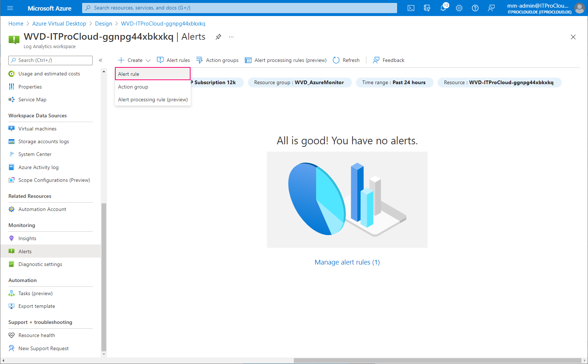
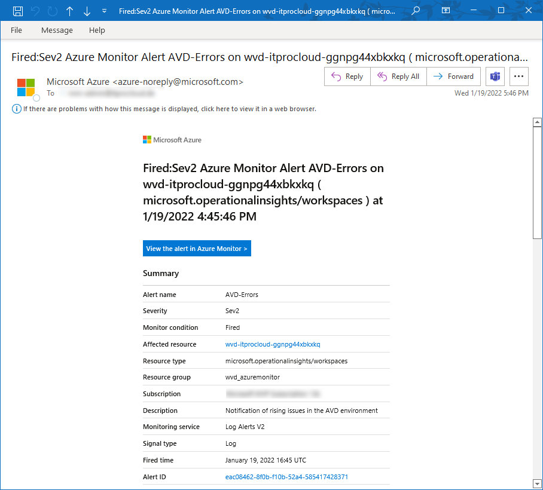

Get alerted if Azure Virtual Desktop fails - AVD Monitoring and alerting with Loganalytics / Azure Monitor
Monitoring Azure Virtual Desktop is important to get insights into the performance and resource usage and alert if something generally goes wrong. Especially, getting alerted if something goes wrong is essential - independent from the cause. If I get an alert, I can directly start to find the root cause and resolve or workaround it.
For that reason, I implement a general alerting in my projects. And that is very easy: I measure specific error messages from the AVD platform service and send an alert if the number of errors exceeds a particular limit (e.g., >5 error messages per 10 minutes).
Important to know is that not all error messages in the platform service are “errors”. For example, Microsoft records the disconnection of a session as an error (ConnectionFailedClientDisconnect) - what happens very often in the evening. Other examples are AuthenticationLogonFailed, PasswordExpired, and much more. We have to exclude the non-issue error messages and count the others for an alert.
If we have done this, we are alerted in many cases - independent of the root cause. These could be:
- Autoscaling or Power-On-Connect is not working for reasons (ConnectionFailedNoHealthyRdshAvailable)
- Automatic deployment of session hosts is not working (ConnectionFailedNoHealthyRdshAvailable)
- Domain Controller not reachable or computer object was overwritten (ConnectionFailedAdTrustedRelationshipFailure)
- Session Host is not available - maybe a broken resource id (SessionHostResourceNotAvailable)
- Orphan sessions (ConnectionFailedUserHasValidSessionButRdshIsUnhealthy)
- …
This alerting helped me a lot in the past to get notified when a problem occurs (especially in the morning if many people try to log on ;-).
Build the alert 
First, configure all host pools’ diagnostic settings to store their logs into a log analytics workspace:
Alternatively, you can use WVDAdmin to do that:

Open the log analytics workspace -> Alerts and create an action group. Action groups are used to define what should happen in an alert. In our case, we configure to get alerted by mail.
Give the action group a name:
Configure the notification type, including the recipients of the mail:
Configure the alert. Select “Log Query” to enter a custom search query to filter for the errors causing issues. Use the following parameters: Query:
>WVDErrors | where not(CodeSymbolic in~("ActivityTimeout","ConnectionFailedClientDisconnect","SavedCredentialsNotAllowed","ConnectionBrokenMissedHeartbeatThresholdExceeded","AuthenticationLogonFailed","FreshCredsRequired","CM_ERR_MISSED_HEARTBEAT_THRESHOLD_EXCEEDED","NL_DISCONNECT_ERROR","PasswordExpired","AccountLockedOut","AccountExpired","InvalidCredentials","AutoReconnectNoCookie","LogonFailed"))
| Field | Value |
|---|---|
| Measure | Table rows |
| Aggregation type | Count |
| Aggregation granularity | 10 |
| Alert logic | Greater than |
| Threshold | 5 |
| Frequency of evaluation | 10 minutes |
This configuration sends an alert if the number of filtered errors is higher than five over the last 10 minutes. Correct this for your environment (threshold and maybe exclude other non-issue errors): 
Add the action group:
Give the alert rule a severity and a name:
Done.
If an alert is triggered, you will get a mail like this:

I plan to have this alerting soon available in Hydra to show on Hydras’ dashboard if host pools are having trouble.
Tip: You can count all the errors in your environment with a KUSTO query. This is very useful to figure out other non-issue error messages:
WVDErrors
| summarize count() by CodeSymbolic, Message
| order by count_ desc